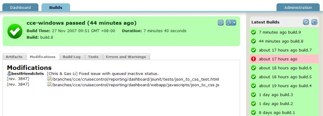

CruiseControl
CruiseControl is both a continuous integration tool and an extensible framework for creating a custom continuous build process. It includes dozens of plugins for a variety of source controls, build technologies, and notifications schemes including email and instant messaging. A web interface provides details of the current and previous builds. And the standard CruiseControl distribution is augmented through a rich selection of 3rd Party Tools.
CruiseControl is written in Java but is used on a wide variety of projects. There are builders supplied for Ant, NAnt, Maven, Phing, Rake, and Xcode, and the catch-all exec builder that can be used with any command-line tool or script.
CruiseControl is open source software and is developed and maintained by a group of dedicated volunteers. CruiseControl is distributed under a BSD-style license.
Related links
The CruiseControl wiki has extensive additional documentation for CruiseControl, including a list of 3rd Party Tools that work with CruiseControl.
Two such projects are ConfigurationGUI and CCScrape. ConfigurationGUI is a Java WebStart Swing GUI for creating cruisecontrol configuration files and monitoring project status. It is bundled with the binary distribution of CruiseControl but can also be downloaded separately. CCScrape is a Java WebStart application that makes easy work of driving XFDs (eXtreme Feedback Devices) from your CruiseControl build results.
There are ports of CruiseControl for .NET and Ruby. The original CruiseControl source code was contributed by ThoughtWorks, who now offers the commerical tool Cruise (not based on the CruiseControl codebase).